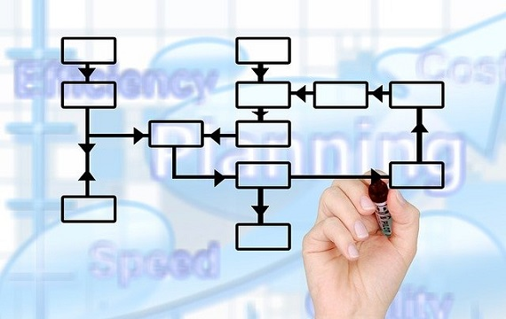
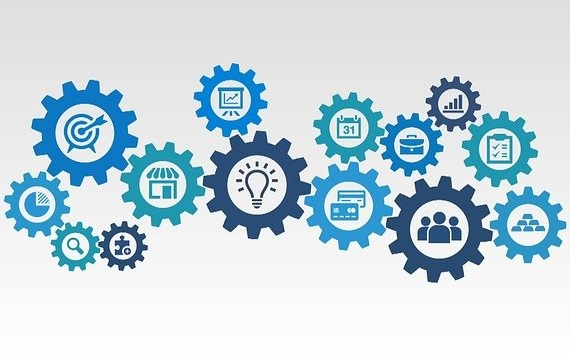

Nuestros servicios
Acompañamos a las empresas a desarrollar e implementar su Sistema de Gestión de Calidad con el fin de incorporar la Mejora Continua como concepto esencial a todos los procesos.
Comprendemos que la ausencia de procesos formalizados se traduce en ineficiencias, re-procesos y la dificultad para cumplir con los objetivos del negocio.
Promovemos la mejora continua y la accesibilidad a la información, no solo para la Dirección o para la Gerencia, sino también para que la Operación pueda medir sus propios objetivos.

Diagnóstico y Optimización de Procesos
- Diagnóstico General.
- Relevamiento de proceso actual.
- Mapa del proceso.
- Estudios de métricas actuales.
- Propuesta de mejora.
- Optimización Global.
- Mapa del estado futuro.
- Propuesta de nuevas métricas.
- Diseño para la confiabilidad.

Planificación de la Estrategia
- Workshop de Estrategia.
- Definición de la misión y visión.
- Comunicación y alineación estratégica.
- Planeamiento de Capacidad y Demanda.
- Creación de perfil de demanda.
- Dimensionamiento de requerimientos necesarios.
- Análisis de variaciones de demanda.
Capacitaciones
- Introducción a Lean Manufacturing.
- Sistemas y Metodologías agiles.
- El Mundo de la Excelencia Operacional.
- Introducción a la practica de Calidad.
- Gestión de proyectos.